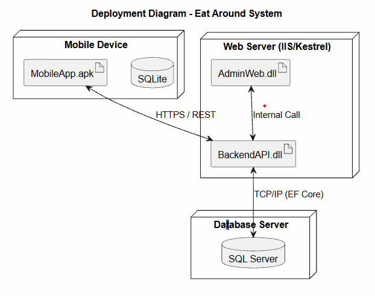
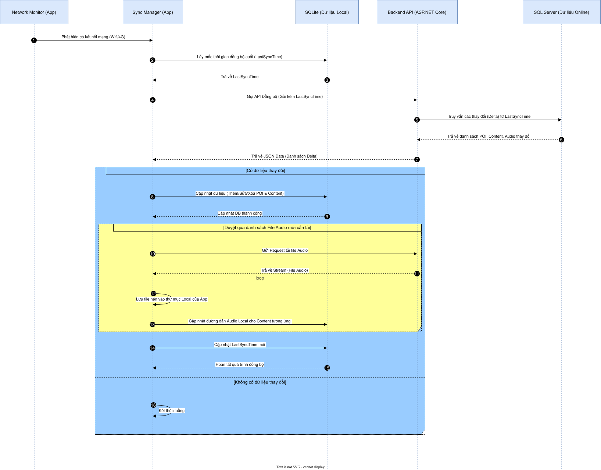
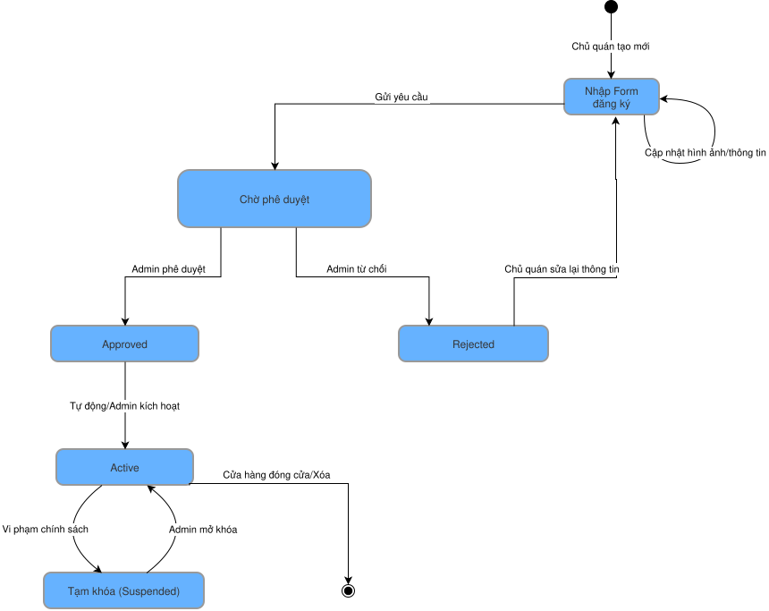

Product Requirements Document
Dự án ZesTour / Eat_Around: Ứng dụng thuyết minh đa ngôn ngữ Phố ẩm thực Vĩnh Khánh, gồm Mobile App (.NET MAUI), Web CMS (ASP.NET Core MVC) và Backend API (.NET 10).
1. Tổng quan dự án
1.1. Vấn đề thực trạng
Khách du lịch, đặc biệt khách quốc tế, gặp rào cản ngôn ngữ khi khám phá phố ẩm thực Vĩnh Khánh; khó tiếp cận thông tin lịch sử món ăn và câu chuyện địa phương. Chủ quán thiếu công cụ số hiện đại để quảng bá và cập nhật nội dung nhất quán.
1.2. Giải pháp
Ứng dụng di động tự động phát audio thuyết minh đa ngôn ngữ theo định vị GPS (Geofencing) hoặc quét mã QR tại quán, kết hợp Web CMS để chủ quán quản lý thông tin điểm đến (POI) và Admin kiểm duyệt toàn bộ nội dung.
1.3. Đối tượng mục tiêu
- Khách du lịch (Visitor): trải nghiệm thuyết minh tự động trên mobile.
- Chủ quán (Shop Owner): đăng ký và quản lý thông tin quán, nội dung mô tả.
- Quản trị viên (Admin): phê duyệt đăng ký, vận hành hệ thống và dữ liệu.
2. Mục tiêu và chỉ số đo lường
Mục tiêu trọng tâm: Xây dựng hệ sinh thái hỗ trợ trải nghiệm du lịch Offline-First, tối ưu hóa tài nguyên thiết bị (Pin/RAM) và đảm bảo tính nhất quán dữ liệu giữa SQL Server (Cloud) và SQLite (Local).
| Nhóm mục tiêu | Chỉ số KPI cụ thể | Phương pháp đo lường |
|---|---|---|
| Hiệu năng Backend | Tỉ lệ phản hồi API < 200ms (P95) | Sử dụng BenchmarkDotNet & Application Insights |
| Độ chính xác GPS | Sai số phát hiện Geofence < 10 mét | Kiểm thử thực địa (Field Testing) tại Vĩnh Khánh |
| Đồng bộ dữ liệu | Thời gian xử lý Sync Delta < 3 giây | Đo lường tại SyncManager (Mobile App) |
| Trải nghiệm âm thanh | Độ trễ kích hoạt Audio/TTS < 500ms | Đo lường từ lúc Trigger Geofence đến khi phát |
| Tối ưu tài nguyên | Mức tiêu thụ Pin chạy ngầm < 5%/giờ | Sử dụng Android Profiler / Xcode Instruments |
| Độ ổn định (Reliability) | Tỉ lệ Crash (Crash-free users) > 99.5% | Theo dõi qua Sentry hoặc Firebase Crashlytics |
3. Yêu cầu chức năng
3.1. Mobile App (Khách du lịch - Visitor)
- Định vị và Bản đồ thực thời: Tích hợp bản đồ tương tác (MAUI Maps/Mapbox), hiển thị vị trí chính xác của người dùng và các điểm POI trong bán kính cấu hình (ví dụ: 50m - 500m).
- Narration Engine (Geofencing):
- Tự động nhận diện khi người dùng bước vào/ra khỏi vùng Geofence của một POI.
- Kích hoạt phát âm thanh (Audio MP3 hoặc System TTS) ngay lập tức mà không cần thao tác tay.
- Cơ chế Cooldown/Debounce: Tránh việc phát lặp lại âm thanh nhiều lần khi người dùng đứng yên hoặc di chuyển quanh ranh giới POI.
- Đồng bộ hóa Delta (Offline Mode): Tự động kiểm tra phiên bản dữ liệu (LastSyncTime). Tải và lưu trữ POI, nội dung đa ngôn ngữ và tệp âm thanh nén về SQLite để sử dụng khi mất kết nối mạng.
- Quét mã QR (Quick Trigger): Cho phép người dùng chủ động nghe thuyết minh bằng cách quét mã QR dán tại quán, cơ chế này có ưu tiên cao nhất và bỏ qua các kiểm tra khoảng cách GPS.
3.2. Web CMS (Chủ cửa hàng - Shop Owner)
- Đăng ký và Quản lý Hồ sơ: Khởi tạo yêu cầu đăng ký cửa hàng (StoreRegistration), cung cấp tọa độ địa lý, thông tin pháp lý và hình ảnh định danh quán để chờ Admin phê duyệt.
- Biên tập nội dung đa ngôn ngữ (Localization):
- Quản lý các bản dịch thuyết minh (PoiTranslation) cho quán của mình theo nhiều ngôn ngữ (Việt, Anh, Nhật, v.v.).
- Upload và quản lý tệp âm thanh (.mp3) chất lượng cao hoặc sử dụng kịch bản văn bản cho bộ máy TTS.
- Báo cáo doanh nghiệp: Xem thống kê lượt ghé thăm và lượt nghe thuyết minh riêng cho địa điểm sở hữu.
3.3. Web CMS (Quản trị viên - Administrator)
- Kiểm duyệt hệ thống: Vận hành luồng phê duyệt StoreRegistration. Có quyền Active, Suspend hoặc Reject các cửa hàng dựa trên tiêu chuẩn cộng đồng.
- Quản lý Tuyến tham quan (Tour Management): Thiết lập các lộ trình (Tours) bằng cách liên kết chuỗi các POI (TourStops) theo chủ đề (ví dụ: "Tour Ốc Vĩnh Khánh", "Tour Ăn vặt đêm").
- Hệ thống Analytics & Intelligence:
- Phân tích Listen Logs để xác định mức độ quan tâm của du khách.
- Theo dõi Heatmap di chuyển và thời gian nghe trung bình để tối ưu hóa vị trí đặt Geofence.
- Quản lý Marketing: Quản lý danh mục Banner quảng cáo hiển thị trên App Mobile.
4. Yêu cầu phi chức năng
Các tiêu chuẩn kỹ thuật đảm bảo hệ thống vận hành ổn định, bảo mật và tối ưu trải nghiệm người dùng trong môi trường thực địa.
| Nhóm yêu cầu | Tiêu chuẩn chi tiết |
|---|---|
| Hiệu năng (Performance) |
|
| Bảo mật (Security) |
|
| Sẵn sàng (Availability) |
|
| Khả năng mở rộng (Scalability) |
|
5. Kiến trúc hệ thống
5.1. Tech Stack
- Mobile App: .NET MAUI (Multi-platform App UI) – Phát triển đa nền tảng Android/iOS với một nền tảng code C# duy nhất.
- Web Admin/CMS: ASP.NET Core MVC & Blazor – Đảm bảo tính tương tác cao cho quản trị viên và hiệu năng SEO tốt.
- Backend API: ASP.NET Core 10 Web API – Xây dựng theo kiến trúc RESTful, hỗ trợ xử lý đa luồng và tối ưu cho .NET 10 mới nhất.
- Dữ liệu phân tán:
- Primary DB (Online): SQL Server – Lưu trữ tập trung toàn bộ dữ liệu hệ thống, log và phân quyền.
- Local DB (Offline): SQLite – Cơ sở dữ liệu nhẹ trên Mobile, đảm bảo truy xuất dữ liệu POI tức thì (0ms latency).
- Thư viện dùng chung: SharedLib (Class Library) – Chứa các định nghĩa Models, DTOs chung để đồng bộ dữ liệu giữa tất cả các phân hệ.
5.2. Mô hình thành phần (Component Model)
Hệ thống được thiết kế theo mô hình Client-Server kết hợp với cơ chế Sync Manager để xử lý bài toán mất kết nối mạng:
- Presentation Layer: Gồm Mobile Client (Visitor) và Web Interface (Admin/Owner).
- Application Layer: Các Controllers xử lý nghiệp vụ tại API trung tâm (Auth, POI, Tours, StoreRegistrations).
- Logic Engines (Mobile):
- Geofence Engine: Tính toán khoảng cách tọa độ thực tế.
- Narration Engine: Điều khiển luồng phát âm thanh/TTS.
- Data Layer: Entity Framework Core làm lớp trung gian (ORM) tương tác với SQL Server qua các bản Migrations.
LastSyncTime, giúp tiết kiệm băng thông và tăng tốc độ khởi động App.
Sơ đồ triển khai hệ thống (Deployment Diagram)

Mô tả sự kết nối giữa Mobile thiết bị cuối, Web Server và hệ thống lưu trữ Media.
6. Sơ đồ thiết kế (Phụ lục trực quan)
Các sơ đồ bên dưới được nhúng trực tiếp từ thư mục diagram để người đọc có cái nhìn tổng thể về nghiệp vụ, vòng đời dữ liệu và hành vi người dùng trên toàn bộ dự án.

6.2. Sequence - Luồng đồng bộ dữ liệu (Sync Delta)

6.3. State - Vòng đời Store Registration


6.5. Sequence - Luồng khởi động Mobile App
SD.svg)
Nguồn: diagram/Luồng Khởi động Mobile App (Frontend)SD.drawio
6.6. Sequence - Luồng khởi động Server và truy cập Admin Web
.svg)
Nguồn: diagram/Luồng Khởi động Server & Truy cập Admin Web (Backend + CMS).drawio
6.7. Bổ sung - QR, Tour và luồng quản trị
6.8. Bổ sung toàn bộ sơ đồ còn lại